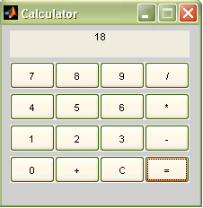
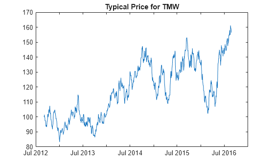

📂 MATLAB Projects Showcase


🔥 Top MATLAB GitHub Repositories
CihadDogan/UDPExample
— Example UDP Receiver and Transmitter in Unity to communicate Unity projects with Simulink.
cran/matlab
— MATLAB interface for CRAN packages
WelinLee/ros_vision_project
— A simple demo on image processing under ros architecture.
inverthemit/MatlabProjects
— MATLAB Examples and Exercises
calkit/example-matlab
— A Calkit project that uses MATLAB.